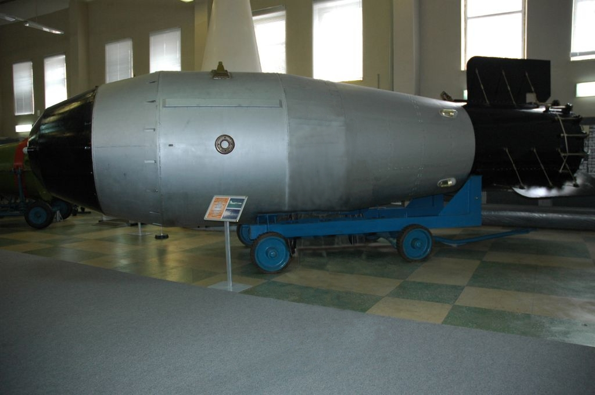
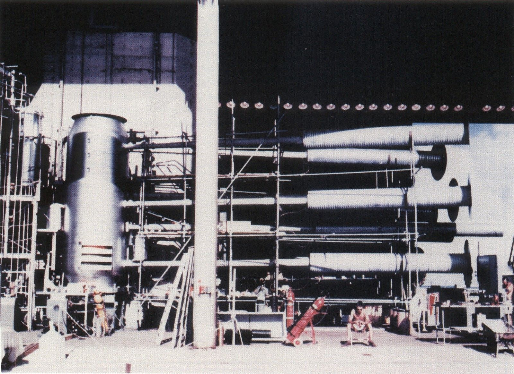

Map
Select your Favorite Nuclear weapon from below and tap on the map to see your results
- Little Boy
-
 A uranium-based bomb dropped on Hiroshima in 1945.
A uranium-based bomb dropped on Hiroshima in 1945.
- Fat Man
-
 A plutonium-based bomb dropped on Nagasaki in 1945.
A plutonium-based bomb dropped on Nagasaki in 1945.
- Tsar Bomba
-  The largest nuclear bomb ever detonated, tested by the Soviet Union in 1961.
- Castle Bravo
-
 A powerful hydrogen bomb test by the U.S. in 1954, causing unexpected fallout.
A powerful hydrogen bomb test by the U.S. in 1954, causing unexpected fallout.
- Ivy Mike
-  The first full-scale hydrogen bomb test by the U.S. in 1952.
Most pizzas Cooked by you before:
Congrats, that's X more than your friend: REALFRIEND99
Congrats, that's X more than your friend: REALFRIEND99